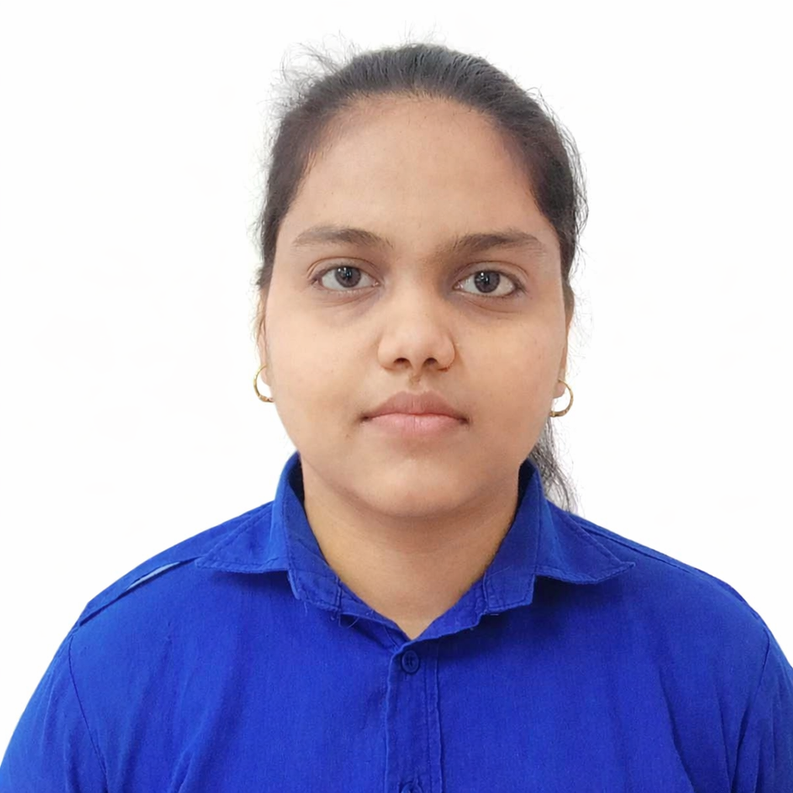

Aspiring Software Developer • DBMS Enthusiast • Problem Solver
Currently pursuing B.Tech in IT
I am a motivated B.Tech IT student with a strong interest in software development, backend systems, and database management. I enjoy building structured scalable solutions and have a solid foundation in Java and DBMS concepts. I continuously improve my problem solving skills and explore real world projects to strengthen my technical expertise.
B.Tech – Information Technology
Banasthali Vidyapith, Rajasthan | 2023 – 2027